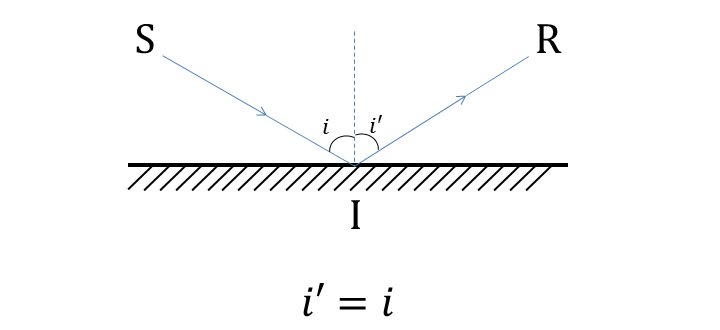
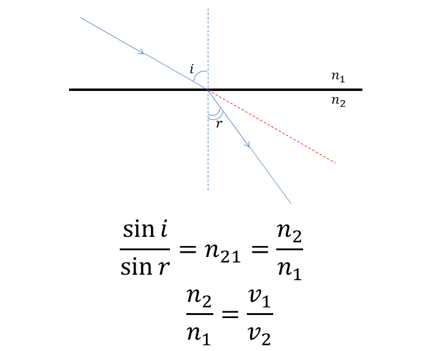
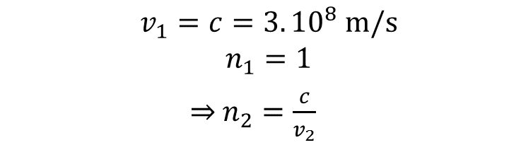
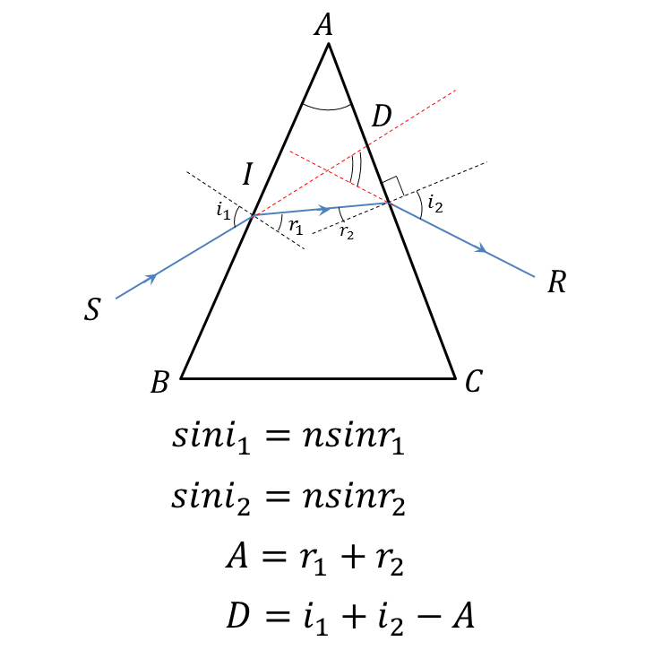
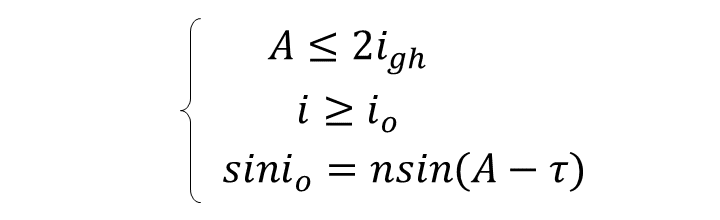
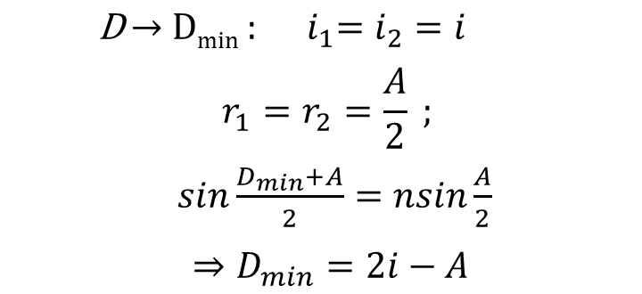
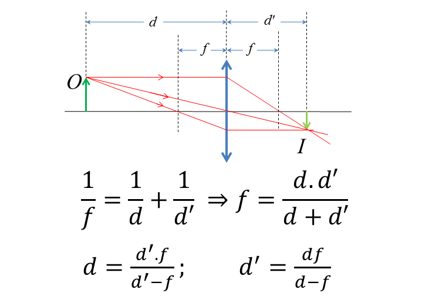
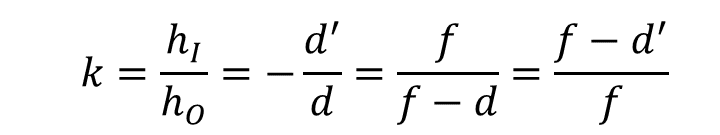
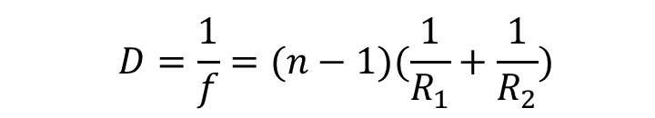
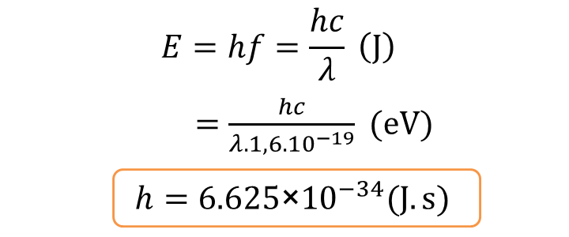

1. GEOMETRIC OPTICS
LAWS OF REFLECTION
SI: incident ray, IR: reflected ray, i: angle of incidence, i': angle of reflection

REFRACTIVE INDEX
n: refractive index of the a medium, v: speed of light in a medium, c: speed of light in vacuum (m/s)
LAW OF REFRACTION
n₁: refractive index of the medium 1,n₂: refractive index of the medium 2, i: angle of incidence, r: angle of refraction,n₂₁: absolute index of refraction

If medium 1 is vacuum

TOTAL REFLECTION PHENOMENON
There is no refracted ray if

PRISM
A: apex angle, D: deviation angle, i₁: angle of incidence, i₂: angle of emergent ray

- Condition to have refractive ray

- When angle of incidence is minimum

THIN LENS
f: focal length (converging lens f>0; diverging lens f<0), d: object distance from lens center, d′: image distance from lens center

MAGNIFICATION FACTOR
h_I: image height, h_O: object height

POWER OF THE LENS
n: refractive index of the lens material, R₁: radius of curvature of the lens surface closest to the light source, R₂: radius of curvature of the lens surface farthest from the light source

2. QUANTUM OF LIGHT
PHOTON ENERGY
h: Planck's constant, f: frequency (Hz), λ: wavelength (m), c: speed of light

CONDITION TO HAVE PHOTOELECTRIC EFFECT
λ: wavelength of the shinning light , λ_o: photoelectric limit, W: emitted work (J)
EINSTEIN'S EQUATION ABOUT PHOTOELECTRIC EFFECT
m: mass of photoelectron (kg), v_o: maximum velocity of photoelectron (m/s)